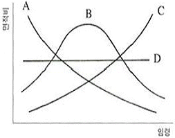
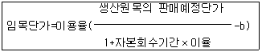
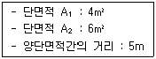

산림기사 (2017-08-26 기출문제)
1과목: 조림학
1. 종자의 실중(A), 용적중(B), 1L 당 종자수(C)의 관계식으로 옳은 것은?
- C=B ×(A×1000)
- C=B ÷ (A×1000)
- C=B ×(A÷ 1000)
- C=B ÷ (A÷ 1000)
(정답률: 55%)

2. 중림작업의 장점으로 옳지 않은 것은?
- 임지의 노출이 방지된다.
- 교림작업보다 조림비용이 낮다.
- 높은 작업기술을 필요로 하지 않는다.
- 상목은 수광량이 많아서 좋은 성장을 하게 된다.
(정답률: 83%)
3. 묘목의 T/R율에 대한 설명으로 옳지 않은 것은?
- 지상부와 지하부의 중량비이다.
- 수치가 클수록 묘목이 충실하다.
- 묘목의 근계발달과 충실도를 설명하는 개념이다.
- 수종과 묘목의 연령에 따라서 다르지만 일반적으로 3.0 정도가 좋다.
(정답률: 72%)
4. 잎의 수분포텐셜에 대한 설명으로 옳은 것은?
- 뿌리보다 높은 값을 가진다.
- 삼투포텐셜은 대부분 +값이다.
- 시든 잎의 압력포텐셜은 대부분 +값이다.
- 일반적으로 한낮보다 한밤중에 높아진다.
(정답률: 69%)
5. 삽목의 장점으로 옳지 않은 것은?
- 모수의 특성을 계승한다.
- 묘목의 양성 기간이 단축된다.
- 천근성이 되어 수명이 길어진다.
- 종자 번식이 어려운 수종의 묘목을 얻을 수 있다.
(정답률: 85%)
6. 가지치기 작업에 따른 효과가 아닌 것은?
- 무절재를 생산한다.
- 부정아 발생을 억제한다.
- 수간의 완만도를 높인다.
- 하층목의 생장을 촉진한다.
(정답률: 81%)
7. 개벌작업 이후 밀식을 하는 경우의 장점으로 옳지 않은 것은?
- 줄기는 가늘지만 근계발달이 좋아 풍해 및 설해 등을 입지 않는다.
- 개체 간의 경쟁으로 연륜폭이 균일하게 되어 고급재를 생산할 수 있다.
- 제벌 및 간벌작업을 할 때 선목의 여유가 생겨 우량 임분으로 유도할 수 있다.
- 수관의 울폐가 빨리 와서 표토의 침식과 건조를 방지하여 개벌에 의한 지력의 감퇴를 줄일 수 있다.
(정답률: 65%)
8. 목본식물의 조직 중 사부의 기능으로 옳은 것은?
- 수분 이동
- 탄소동화작용
- 탄수화물 이동
- 수분 증발 억제
(정답률: 74%)
9. 어린나무 가꾸기 작업에 대한 설명으로 옳은 것은?
- 여름철에 실시하는 것이 좋다.
- 제초제 또는 살목제를 사용하지 않는다.
- 윤벌기 내에 1회로 작업을 끝내는 것이 원칙이다.
- 일반적으로 벌채목을 이용한 중간 수입을 기대할 수 있다.
(정답률: 68%)
10. 정아우세현상을 억제시키는 호르몬은?
- 옥신
- 지베렐린
- 아브시스산
- 사이토키닌
(정답률: 47%)
11. 낙엽성 침엽수에 해당하는 수종은?
- Pinus thubergii
- Juniperus chinensis
- Taxodium distichum
- Cryptomeria japonica
(정답률: 46%)
12. 간벌의 효과로 거리가 먼 것은?
- 산불위험도 감소
- 직경의 생장 촉진
- 임목 형질의 향상
- 개체목간 생육공간 확보 경쟁 촉진
(정답률: 72%)
13. 혼효림과 비교한 단순림에 대한 장점으로 옳은 것은?
- 식재 후 관리가 용이하다.
- 양료 순환이 빠르게 진행된다.
- 생물 다양성이 비교적 높은 편이다.
- 토양양분이 효율적으로 이용될 수 있다.
(정답률: 86%)
14. 종자의 순량률을 구하는 산식에 필요한 사항으로만 올바르게 나열한 것은?
- 순정 종자의 수, 전체 종자의 수
- 순정 종자의 무게, 전체 종자의 무게
- 발아 된 종자의 수, 발아되지 않은 종자의 수
- 발아 된 종자의 무게, 발아 되지 않은 종자의 무게
(정답률: 60%)
15. 점성이 있는 점토가 대부분인 토양은?
- 식토
- 사토
- 석력토
- 사양토
(정답률: 75%)
16. 개벌작업에 대한 설명으로 옳지 않은 것은?
- 음수 수종 갱신에 유리하다.
- 벌목, 조재, 집재가 편리하고 비용이 적게든다.
- 작업의 실행이 빠르고 높은 수준의 기술이 필요하지 않다.
- 현재의 수종을 다른 수종으로 바꾸고자 할 때 가장 쉬운 방법이다.
(정답률: 81%)
17. 산벌작업 중 결실량이 많은 해에 1회 벌채하여 종자가 땅에 떨어지도록 하는 것은?
- 종벌
- 후벌
- 예비벌
- 하종벌
(정답률: 80%)
18. 열매의 형태가 삭과에 해당하는 수종은?
- Acer palmatum
- Ulmus davidiana
- Camellia japonica
- Quercus acutissima
(정답률: 56%)
19. 일본잎갈나무, 소나무, 삼나무, 편백 등의 종자 저장 및 발아 촉진에 가장 효과가 있는 종자 처리방법은?
- 고온 처리법
- 냉수 처리법
- 황산 처리법
- 기계적 처리법
(정답률: 72%)
20. 온량지수 계산 시 기준이 되는 온도는?
- 0℃
- 5℃
- 10℃
- 15℃
(정답률: 75%)
2과목: 산림보호학
21. 소나무좀의 연간 우화 횟수는?
- 1회
- 2회
- 3회
- 4회
(정답률: 69%)
22. 산불 예방 및 산불 피해 최소화를 위한 방법으로 효과적이지 않은 것은?
- 방화선 설치
- 일제 동령림 조성
- 가연성 물질 사전 제거
- 간벌 및 가지치기 실시
(정답률: 85%)
23. 약해에 대한 설명으로 옳지 않은 것은?
- 농약에 저항성인 개체가 출현한다.
- 가뭄, 강풍 직후 또는 비가 온 후에 일어나기 쉽다.
- 줄기, 잎, 열매 등의 변색, 낙엽, 낙과 등이 유발되고 심하면 고사한다.
- 넓은 의미로는 농약 사용 후에 수목이나 인축에 생기는 생리적 장해현상을 말한다.
(정답률: 51%)
24. 천공성 해충을 방제하는데 가장 적합한 방법은?
- 경운법
- 소살법
- 온도처리법
- 번식장소 유살법
(정답률: 81%)
25. 수목의 그을음병을 방제하는데 가장 적합한 것은?
- 중간기주를 제거한다.
- 방풍시설을 설치한다.
- 해가림시설을 설치한다.
- 흡즙성 곤충을 방제한다.
(정답률: 69%)
26. 수목의 줄기를 주로 가해하는 해충은?
- 솔나방
- 박쥐나방
- 어스렝이나방
- 삼나무독나방
(정답률: 75%)
27. 균류의 영양기관이 아닌 것은?
- 균사
- 포자
- 균핵
- 자좌
(정답률: 60%)
28. 솔잎혹파리가 겨울을 나는 형태는?
- 알
- 성충
- 유충
- 번데기
(정답률: 72%)
29. 잣나무 털녹병 방제방법으로 옳지 않은 것은?
- 중간기주 제거
- 보르도액 살포
- 병든 나무 소각
- 주론 수화제 살포
(정답률: 61%)
30. 가해하는 수목의 종류가 가장 많은 해충은?
- 솔나방
- 솔잎혹파리
- 천막벌레나방
- 미국흰불나방
(정답률: 84%)
31. 주로 토양에 의하여 전반되는 수목병은?
- 묘목의 모잘록병
- 밤나무 줄기마름병
- 오동나무 빗자루병
- 오리나무 갈색무늬병
(정답률: 78%)
32. 밤나무 줄기마름병 방제방법으로 옳지 않은 것은?
- 내병성 품종을 식재한다.
- 동해 및 볕데기를 막고 상처가 나지 않게한다.
- 질소질 비료를 많이 주어 수목을 건강하게 한다.
- 천공성 해충류의 피해가 없도록 살충제를 살포한다.
(정답률: 82%)
33. 솔수염하늘소에 대한 설명으로 옳지 않은 것은?
- 1년에 1회 발생한다.
- 성충의 우화시기는 5~8월이다.
- 목질부 속에서 번데기 상태로 월동한다.
- 유충이 소나무의 형성층과 목질부를 가해한다.
(정답률: 72%)
34. 내동성이 가장 강한 수종은?
- 차나무
- 밤나무
- 전나무
- 버드나무
(정답률: 69%)
35. 아황산가스에 대한 저항성이 가장 큰 수종은?
- 전나무
- 삼나무
- 은행나무
- 느티나무
(정답률: 80%)
36. 밤나무혹벌 방제법으로 가장 효과가 적은 것은?
- 천적을 이용한다.
- 등화유살법을 사용한다.
- 내충성 품종을 선택하여 식재한다.
- 성충 탈출 전의 충영을 채취하여 소각한다.
(정답률: 62%)
37. 경제적 피해수준에 대한 설명으로 옳은 것은?
- 해충에 의한 피해액과 방제비가 같은 수준의 밀도
- 해충에 의한 피해액이 방제비보다 큰 수준의 밀도
- 해충에 의한 피해액이 방제비보다 작은 수준의 밀도
- 해충에 의해 경제적으로 큰 피해를 주는 수준의 밀도
(정답률: 64%)
38. 오동나무 탄저병에 대한 설명으로 옳은 것은?
- 주로 열매에 많이 발생한다.
- 주로 묘목의 줄기와 잎에 발생한다.
- 주로 뿌리에 발생하여 뿌리를 썩게 한다.
- 담자균이 균사상태로 줄기에서 월동한다.
(정답률: 63%)
39. 과수 및 수목의 뿌리혹병을 발생시키는 병원의 종류는?
- 세균
- 균류
- 바이러스
- 파이토플라스마
(정답률: 70%)
40. 대추나무 빗자루병 방제에 가장 적합한 약제는?
- 페니실린
- 석회유황합제
- 석회보르도액
- 옥시테트라사이클린
(정답률: 84%)
3과목: 임업경영학
41. 유동자산에 해당하지 않은 것은?
- 현금
- 묘목
- 산림축적
- 미처분 임산물
(정답률: 75%)
42. 산림청장은 관계 중앙행정기관의 장과 협의하여 전국의 산림을 대상으로 산림문화‧휴양기본계획을 몇 년마다 수립‧시행하는가?(관련 규정 개정전 문제로 여기서는 기존 정답인 3번을 누르면 정답 처리됩니다. 자세한 내용은 해설을 참고하세요.)
- 1년 마다
- 5년 마다
- 10년 마다
- 20년 마다
(정답률: 58%)
43. 산림의 수자원 함양기능을 증진시키기 위한 바람직한 관리방법이 아닌 것은?
- 벌기령을 길게 한다.
- 2단림 작업을 실시한다.
- 소면적 벌채를 실시한다.
- 대면적 개벌을 실시한다.
(정답률: 78%)
44. Huber식에 의한 수간석해 방법으로 옳지 않은 것은?
- 구분의 길이를 2m로 원판을 채취한다.
- 반경은 일반적으로 5년 간격으로 측정한다.
- 단면의 반경은 4방향으로 측정하여 평균한다.
- 벌채점의 위치는 흉고 높이인 지상 1.2m로 한다.
(정답률: 71%)
45. 종합원가계산 방법에 대한 설명으로 옳지 않은 것은?
- 공정별 원가계산방법이라고도 한다.
- 제품의 원가를 개개의 제품단위별로 직접 계산하는 방법이다.
- 같은 종류와 규격의 제품이 연속적으로 생산되는 경우에 사용한다.
- 생산된 제품의 전체원가를 총생산량으로 나누어서 단위원가를 산출한다.
(정답률: 68%)
46. 투자에 의해 장래에 예상되는 현금 유입과 유출의 현재가를 동일하게 하는 할인율로서 투자효율을 결정하는 방법은?
- 회수기간법
- 순현재가치법
- 내부수익률법
- 수익‧비용비법
(정답률: 52%)
47. 임지기망가 계산식에서 필요한 인자가 아닌 것은?
- 조림비
- 산림면적
- 주벌수익
- 간벌수익
(정답률: 61%)
48. 법정상태의 요건이 아닌 것은?
- 법정벌채량
- 법정생장량
- 법정영급분배
- 법정임분배치
(정답률: 61%)
49. 법정림의 산림면적이 60ha, 윤벌기 60년, 1영급을 편성한 영계가 10개로 구성된 경우 법정영급면적은? (단, 갱신기는 고려하지 않음)
- 10ha
- 20ha
- 30ha
- 50ha
(정답률: 74%)
50. 다음 그림과 같은 4가지 형태의 산림의 구조 중 속성수 도입 및 복합임업경영(혼농임업 등) 도입이 필요한 산림구조는?

- A
- B
- C
- D
(정답률: 71%)
51. 노령림과 미숙림이 함께 존재하는 임분을 벌채할 때 어느 쪽이든지 경제적 불이익을 감소시키기 위하여 설정하는 기간은?
- 갱신기
- 윤벌기
- 회귀년
- 정리기
(정답률: 72%)
52. 소생림 중심의 자연휴양림 관리방법으로 옳은 것은?
- 여름철 산책공간 조성을 위해 교목림으로 육성한다.
- 출입제한 등의 이용규제가 없어도 높은 자연성을 유지할 수 있다.
- 이용밀도가 가장 높은 공간이므로 답압에 의한 영향을 고려해야 한다.
- 인위적 관리를 통해 수목은 적게 하고 잔디 및 초지가 잘 자라도록 관리한다.
(정답률: 61%)
53. 임목의 흉고직경은 20cm, 수고는 15m, 형수는 0.4를 적용하였을 경우 임목의 재적은?
- 0.018m3
- 0.188m3
- 1.884m3
- 18.840m3
(정답률: 68%)
54. 생장량을 구분할 때 수목의 생장에 따른 분류와 임목의 부분에 따른 분류가 있다. 다음 중 수목의 생장에 따른 분류에 해당되지 않는 것은?
- 등귀생장
- 직경생장
- 재적생장
- 형질생장
(정답률: 37%)
55. 임도를 신설하기 위해 필요한 비용을 전액 대출받고 10년 간 상환하는 경우에 임도 시설비용에 대하여 매년 마다 균등한 액수의 상환비용을 의미하는 것은?
- 유한연년이자 전가식
- 유한연년이자 후가식
- 무한정기이자 전가식
- 무한정기이자 후가식
(정답률: 56%)
56. 임목의 흉고직경을 계산하는 방법으로 산술평균직경법(a)과 흉고단면적법(b)의 관계에 대한 설명으로 옳은 것은?
- a와 b는 같은 값이 된다.
- a가 b보다 큰 값이 된다.
- b가 a보다 큰 값이 된다.
- a와 b사이에는 일정한 관계가 없다.
(정답률: 60%)
57. 다음 시장역산가식에서 b가 의미하는 것은?

- 조재율
- 임목시가
- 임목가격
- 단위생산비용
(정답률: 62%)
58. 조림 후 5년이 경과한 산지에 산불로 인하여 임목이 소실되었을 경우 피해액을 조사하기 위해 가장 적합한 임목가 계산 방법은?
- Glaser법
- 임목매매가
- 임목기망가
- 임목비용가
(정답률: 65%)
59. 임업소득의 계산방법으로 옳은 것은?
- 자본에 귀속하는 소득 = 임업순수익 - (지대 + 자본이자)
- 임지에 귀속하는 소득 = 임업소득 - (지대 + 가족노임추정액)
- 가족노동에 귀속하는 소득 = 임업소득 - (지대+자본이자)
- 경영관리에 귀속하는 소득 = 임업소득 - (지대+가족노임추정액)
(정답률: 44%)
60. 벌채목의 길이가 20m, 원구단면적이 0.6m2이고, 중앙단면적이 0.55m2, 말구단면적이 0.4m2일 경우에 스말리안(Smalian)식에 의한 재적은?
- 8.0m3
- 10.0m3
- 10.3m3
- 11.0m3
(정답률: 54%)
4과목: 임도공학
61. 점착성이 큰 점질토의 두꺼운 성토층 다짐에 가장 효과적인 로울러는?
- 탬핑 로울러
- 텐덤 로울러
- 머캐덤 로울러
- 타이어 로울러.
(정답률: 76%)
62. 임도의 설계에서 종단면도를 작성할 때, 횡‧종의 축척은 얼마로 해야하는가?
- 횡 : 1/100, 종 : 1/1200
- 횡 : 1/200, 종 : 1/1000
- 횡 : 1/1000, 종 : 1/200
- 횡 : 1/1200, 종 : 1/100
(정답률: 68%)
63. 임도 시공 시 벌개제근 작업에 대한 설명으로 옳지 않은 것은?
- 절취부에 벌개제근 작업을 할 경우에는 시공효율을 높일 수 있다.
- 성토량이 부족할 경우 벌개제근된 임목을 묻어 부족한 토량을 보충하기도 한다.
- 벌개제근 작업을 완전히 하지 않으면 나무사이의 공극에 토사가 잘 들어가지 않는다.
- 벌개제근 작업을 제대로 하지 않으면 부식으로 인한 공극이 발생하여 성토부가 침하하는 원인이 되기도 한다.
(정답률: 68%)
64. 임도 노면 시공방법에 따른 분류로 머캐덤(Macadam)도 라고도 불리는 것은?
- 쇄석도
- 사리도
- 토사도
- 통나무길
(정답률: 74%)
65. 임도의 노체를 구성하는 기본적인 구조가 아닌 것은?
- 노상
- 기층
- 표층
- 노층
(정답률: 82%)
66. 영선측량과 중심선측량에 대한 설명으로 옳지 않은 것은?
- 영선은 절토작업과 성토작업의 경계점이 된다.
- 산지경사가 완만할수록 중심선이 영선보다 안쪽에 위치하게 된다.
- 중심선측량은 지형상태에 따라 파형지형의 소능선과 소계곡을 관통하며 진행된다.
- 산지 경사가 45% ~ 55% 정도일 때 두 측량 방법으로 각각 측량한 측점이 대략 일치한다.
(정답률: 66%)
67. 적정임도밀도에 대한 설명으로 옳지 않은 것은?
- 임도밀도가 증가하면 조재비, 집재비는 낮아진다.
- 임도간격이 크면 단위면적당 임도개설비용은 감소한다.
- 집재비와 임도개설비의 합계비용을 최대화하여 산정한다.
- 집재비와 임도개설비의 합계는 임도간격이 좁거나 넓어도 모두 증가한다.
(정답률: 54%)
68. 임도 곡선 설정법에 해당하지 않는 것은?
- 우회법
- 편각법
- 교각법
- 진출법
(정답률: 63%)
69. 콘크리트 포장 시공에서 보조기층의 기능으로 옳지 않은 것은?
- 동상의 영향을 최소화한다.
- 노상의 지지력을 증대시킨다.
- 노상이나 차단층의 손상을 방지한다.
- 줄눈,균열, 슬래브 단부에서 펌핌현상을 증대시킨다.
(정답률: 76%)
70. 비탈면의 위치와 기울기, 노체와 노상의 끝손질 높이 등을 표시하여 흙깎기와 흙쌓기 공사를 정확히 실시하기 위해 설치하는 것은?
- 수평틀
- 토공틀
- 흙일겨냥틀
- 비탈물매 지시판
(정답률: 63%)
71. 흙의 입도분포의 좋고 나쁨을 나타내는 균등계수의 산출식으로 옳은 것은?(단, 통과중량백분율 x에 대응하는 입경은 Dx)
- D10 ÷D60
- D20 ÷D60
- D60 ÷D20
- D60 ÷D10
(정답률: 69%)
72. A지점의 지반고가 19.5m, B지점의 지반고가 23.5m이고 두 지점 간의 수평거리가 40m일 때 A로부터 몇 m 지점에서 지반고 20m 등고선이 지나가는가?
- 3m
- 5m
- 7m
- 10m
(정답률: 57%)
73. 사리도(자갈길, gravel road)의 유지관리에 대한 설명으로 옳지 않은 것은?
- 방진처리에 염화칼슘은 사용하지 않는다.
- 노면의 제초나 예불은 1년에 한 번 이상 실시한다.
- 비가 온 후 습윤한 상태에서 노면 정지작업을 실시한다.
- 횡단배수구의 기울기는 5~6% 정도를 유지하도록 한다.
(정답률: 68%)
74. 임도의 종단기울기에 대한 설명으로 옳지 않은 것은?
- 최소 기울기는 3% 이상으로 설치한다.
- 종단기울기를 높게 하면 임도우회율이 적어진다.
- 보통 자동차가 설계속도의 90% 이상 정도로 오를 수 있도록 한다.
- 임도 설계 시 종단기울기 변경은 전 노선을 조정하여 재시공하는 의미를 갖는다.
(정답률: 63%)
75. 임도 종단면도에 기록하는 사항이 아닌 것은?
- 측점
- 단면적
- 성토고
- 누가거리
(정답률: 50%)
76. 임도 측선의 거리가 99.16m이고 방위가 S 39°15´25˝W일 때 위거와 경거의 값으로 옳은 것은?
- 위거=+76.78m 경거=+62.75m
- 위거=+76.78m 경거=-62.75m
- 위거=-76.78m 경거=+62.75m
- 위거=-76.78m 경거=-62.75m
(정답률: 40%)
77. 법령상 임도 설치가 가능한 지역은?
- 산지관리법에서 정한 산지전용 제한지역
- 임도 타당성 평가점수가 60점 이상인 지역
- 임도거리의 10% 이상의 지역이 경사 35°미만인 지역
- 농어촌도로정비법에 따른 농로로 확정‧고시된 노선과 중복되는 지역
(정답률: 54%)
78. 가선집재와 비교한 트랙터에 의한 집재작업의 장점으로 옳지 않은 것은?
- 기동성이 높다.
- 작업이 단순하다.
- 작업생산성이 높다.
- 잔존임분에 대한 피해가 적다.
(정답률: 78%)
79. 절토‧성토사면에 붕괴의 우려가 있는 지역에 사면길이 2~3m 마다 설치하는 소단의 폭 기준은?
- 0.1 ~ 0.5m
- 0.5 ~ 1.0m
- 1.5 ~ 2.5m
- 2.5 ~ 3.5m
(정답률: 61%)
80. 다음 조건에서 양단면적평균법으로 계산한 토량은?

- 25m3
- 50m3
- 75m3
- 100m3
(정답률: 70%)
5과목: 사방공학
81. 3ha 유역에 최대 시우량이 60mm/h이면 시우량법에 의한 최대 홍수유량은?(단, 유거계수는 0.8)
- 0.04m3/s
- 0.4m3/s
- 4.0m3/s
- 40.0m3/s
(정답률: 64%)
82. 땅깎기 비탈면의 안정과 녹화를 위한 시공방법으로 옳지 않은 것은?
- 경암 비탈면은 풍화‧낙석 우려가 많으므로 새심기 공법이 적절하다.
- 점질성 비탈면은 표면침식에 약하고 동상‧붕락이 많으므로 떼붙이기 공법이 적절하다.
- 모래층 비탈면은 절토공사 직후에는 단단한 편이나 건조해지면 붕락되기 쉬우므로 전면적 객토가 좋다.
- 자갈이 많은 비탈면은 모래가 유실 후, 요철면이 생기기 쉬우므로 떼붙이기보다 분사파종공법이 좋다.
(정답률: 59%)
83. 벌도목, 간벌재를 이용하여 강우로 인한 토사유출을 방지할 목적으로 시공하는 방법은?
- 식책공
- 식수공
- 편책공
- 돌망태공
(정답률: 55%)
84. 시멘트 콘크리트의 응결경화 촉진제로 많이 사용하는 혼화제는?
- 석회
- 규조토
- 규산백토
- 염화칼슘
(정답률: 76%)
85. 산사태의 발생요인에서 내적요인에 해당하는 것은?
- 강우
- 지진
- 벌목
- 토질
(정답률: 74%)
86. 전수직응력이 100gf/cm2, tanø(ø는 내부마찰각) 값이 0.8, 점착력이 20gf/cm2일 때, 토양의 전단강도는? (단, 간극수압은 무시함)
- 80gf/cm2
- 100gf/cm2
- 120gf/cm2
- 145gf/cm2
(정답률: 41%)
87. 메쌓기 사방댐의 시공 높이 한계는?
- 1.0m
- 2.0m
- 3.0m
- 4.0m
(정답률: 43%)
88. 돌쌓기 기슭막이 공법의 표준 기울기는?
- 1:0.3 ~ 0.5
- 1:0.3 ~ 1.5
- 1:0.5 ~ 1.3
- 1:1.3 ~ 1.5
(정답률: 53%)
89. 비탈다듬기나 단끊기 공사로 생긴 토사를 계곡부에 넣어서 토사 활동을 방지하기 위해 설치하는 산지사방 공사는?
- 골막이
- 누구막이
- 기슭막이
- 땅속흙막이
(정답률: 74%)
90. 땅깎기 비탈면에 흙이 붙어있는 반떼를 수평방향으로 줄로 붙여 활착 녹화시키는 공법은?
- 줄떼심기공법
- 줄떼다지기공법
- 줄떼붙이기공법
- 평떼붙이기공법
(정답률: 66%)
91. 계류의 유심을 변경하여 계안의 붕괴와 침식을 방지하는 사방공작물은?
- 수제
- 둑막이
- 바닥막이
- 기슭막이
(정답률: 69%)
92. 비탈면 하단부에 흐르는 계천의 가로침식에 의해 일어나며, 침식 및 붕괴된 물질은 퇴적되지 않고 대부분 유수와 함께 유실되는 붕괴형 침식은?
- 산붕
- 포락
- 붕락
- 산사태
(정답률: 71%)
93. 2매의 선떼와 1매의 갓떼 또는 바닥떼를 사용하는 선떼붙이기는?
- 2급
- 4급
- 6급
- 8급
(정답률: 54%)
94. 폐탄광지의 복구녹화에 대한 설명으로 옳지 않은 것은?
- 경제림을 단기적으로 조성한다.
- 차폐식재하여 좋은 경관을 만든다.
- 폐석탄 등을 제거하고 복토하여 식재한다.
- 사면붕괴 방지를 위해 사면 안정각을 유지한다.
(정답률: 76%)
95. 임내 강우량의 구성요소가 아닌 것은?
- 수간유하우량
- 수관통과우량
- 수관적하우량
- 수관차단우량
(정답률: 65%)
96. 중력식 사방댐 설계에서 고려하는 안정조건이 아닌 것은?
- 전도
- 퇴적
- 제체 파괴
- 기초지반 지지력
(정답률: 67%)
97. 사방사업 대상지 유형 중 황폐지에 속하는 것은?
- 밀린땅
- 붕괴지
- 민둥산
- 절토사면
(정답률: 77%)
98. 사방댐의 설계요인에 대한 설명으로 옳지 않은 것은?
- 댐의 위치는 계상에 암반이 존재해야만 설치할 수 있다.
- 계획 계상기울기는 현 계상기울기의 1/2 ~ 2/3정도가 가장 실용적이다.
- 종‧횡침식이 일어나는 구간이 긴 구간에서는 원칙적으로 계단상 댐을 계획한다.
- 단독의 높은 댐과 연속된 낮은 댐군의 선택은 그 지역의 토사생산의 특성과 시공 및 유지의 난이도를 충분히 검토하여 결정한다.
(정답률: 71%)
99. 침식의 원인이 다른 것은?
- 자연침식
- 가속침식
- 정상침식
- 지질학적 침식.
(정답률: 67%)
100. 비탈면 돌쌓기에 대한 설명으로 옳지 않은 것은?
- 돌을 쌓는 방법에 따라 골쌓기와 켜쌓기가 있다.
- 찰쌓기는 2~3m2마다 물빼기 구멍을 설치한다.
- 돌쌓기는 일곱에움 이상 아홉에움 이하가 되도록 한다.
- 비탈 기울기가 1:1보다 완만한 경우는 돌붙이기 공사라고 한다.
(정답률: 71%)